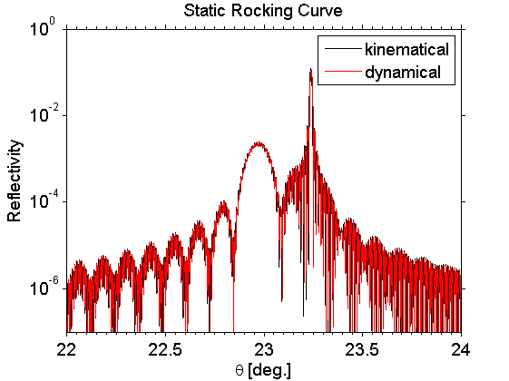
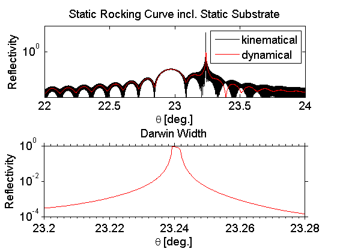
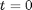
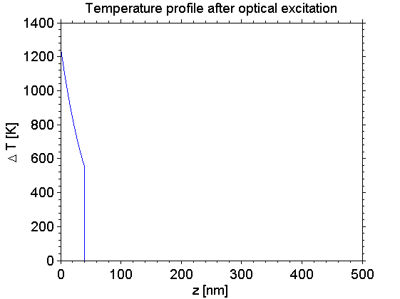
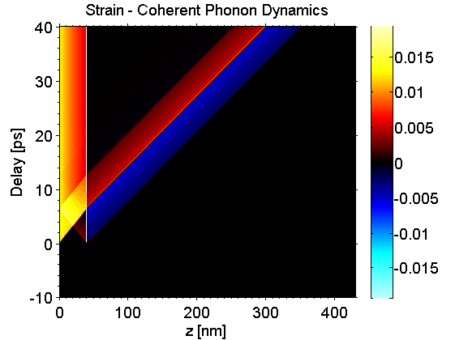
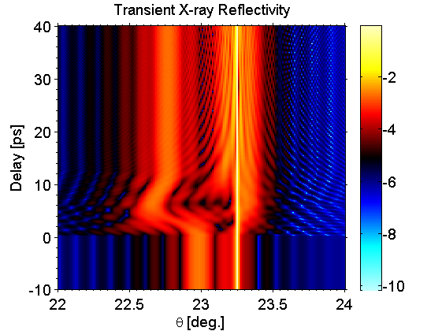
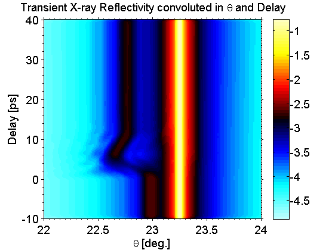

XRD Example
In this example we show how to carry out XRD simulations for the static and transient case.
Before we can start a XRD simulation we need to build a sample structure. For the transient XRD simulations also according lattice dynamics are necessary as input.
Be sure to include all folders of the udkm1dsim toolbox to your MATLAB search path. Especially the /parameters and /helpers folders with all their subfolders.
Contents
here we clear the workspace and close all figures
clear all; close all; % these are some units and constants we can use later on u = units; const = constants;
Build a Sample Structure
O = atomBase('O'); Ti = atomBase('Ti'); Sr = atomBase('Sr'); Ru = atomBase('Ru'); Pb = atomBase('Pb'); Zr = atomBase('Zr'); cSTOsub = 3.905 *u.ang; cSRO = 3.94897 *u.ang; svSRO = 6.312 *u.nm/u.ps; svSTO = 7.800 *u.nm/u.ps; propSRO.aAxis = cSTOsub; % aAxis propSRO.bAxis = cSTOsub; % bAxis propSRO.debWalFac = 0; % Debye-Waller factor propSRO.soundVel = svSRO; % sound velocity propSRO.optPenDepth = 43.8*u.nm; % optical penetration depth propSRO.thermCond = 5.72*u.W/(u.m *u.K); % heat conductivity propSRO.linThermExp = 1.03e-5; % linear thermal expansion propSRO.heatCapacity = @(T)(455.2 + 0.112.*T - 2.1935e6./T.^2); % heat capacity [J/kg K] SRO = unitCell('SRO','SRO',cSRO,propSRO); SRO.addAtom(O,0); SRO.addAtom(Sr,0); SRO.addAtom(O,0.5); SRO.addAtom(O,0.5); SRO.addAtom(Ru,0.5); propSTOsub.aAxis = cSTOsub; % aAxis propSTOsub.bAxis = cSTOsub; % bAxis propSTOsub.debWalFac = 0; % Debye-Waller factor propSTOsub.soundVel = svSTO; % sound velocity propSTOsub.optPenDepth = Inf; % optical penetration depth propSTOsub.thermCond = 12*u.W/(u.m *u.K); % heat conductivity propSTOsub.linThermExp = 1e-5; % linear thermal expansion propSTOsub.heatCapacity = @(T)(733.73 + 0.0248.*T - 6.531e6./T.^2); % heat capacity [J/kg K] STOsub = unitCell('STOsub', 'STOsub', cSTOsub, propSTOsub); STOsub.addAtom(O,0); STOsub.addAtom(Sr,0); STOsub.addAtom(O,0.5); STOsub.addAtom(O,0.5); STOsub.addAtom(Ti,0.5); S = structure('Single Layer'); S.addSubStructure(SRO,100); % add 100 layers of SRO to sample S.addSubStructure(STOsub,1000);% add 1000 layers of STO substrate distances = S.getDistancesOfUnitCells();
set the parameters for the XRD simulations
forceRecalc = false; cacheDir = './cache'; E = 8047*u.eV; % X-ray energy pol = 0.5; % mixed X-ray polarization theta = (22:0.0001:24)*u.deg; % theta-range % initialize the kinematical XRD simulation K = XRDkin(S,forceRecalc,E,pol); K.setCacheDir(cacheDir); % set the cache directory K.setQzByTheta(theta); % set the theta range % calculate the static rocking curve for the homogenous sample in 1 line Rkin = K.homogeneousReflectivity(); % initialize the dynamical XRD simulation D = XRDdyn(S,forceRecalc,E,pol); D.setCacheDir(cacheDir); % set the cache directory D.setQzByTheta(theta); % set the theta range % calculate the static rocking curve for the homogenous sample in 1 line Rdyn = D.homogeneousReflectivity();
Calculating _homogenousReflectivity_ ... Elapsed time for _homogenousReflectivity_: 0.108 seconds. Calculating _homogenousReflectivity_ ... Elapsed time for _homogenousReflectivity_: 0.77523 seconds.
Static Rocking Curves - thin sample
For the this sampple, both kinematical and dynamical XRD theory nealry coincident. However, the slight offset of the two dataset is due to the neglect of refraction in the kinematical model. The oscillations on both curves are so-called Kiessig fringes which originate from the finite thickness of the sample, which is smaller than the absorption/extinction depth of the X-ray photons.
figure(1); semilogy(theta/u.deg,Rkin, '-k'); hold on; semilogy(theta/u.deg,Rdyn, '-r'); ylim([1e-7 1]); xlabel('\theta [deg.]'); ylabel('Reflectivity'); title('Static Rocking Curve'); legend('kinematical', 'dynamical'); set(gca, 'XMinorTick', 'on', 'YMinorTick', 'on', 'TickDir', 'out');
Add static substrate
In order to simulate rocking curves of samples having a quasi-infinite substrate, one can add such a static substrate to the sample structure as an special substructure. This substrate substructure is not considered in the heat and phonon simulations and only acts in XRD simulations.
substrate = structure('STOsubstrate'); substrate.addSubStructure(STOsub,100000); % add the substrate to the sample S.addSubstrate(substrate);
Recalculate the static rocking curves
Rkin = K.homogeneousReflectivity(); Rdyn = D.homogeneousReflectivity();
Calculating _homogenousReflectivity_ ... Elapsed time for _homogenousReflectivity_: 0.035704 seconds. Calculating _homogenousReflectivity_ ... Elapsed time for _homogenousReflectivity_: 1.0392 seconds.
Static Rocking Curves - thick sample
Obviously, the kinematical simulation fails at maximum of the substrate peak, since reflectivities greater than 1 are simulated. Furthermore, the kinematical result still shows Kiessig fringes which are vanished in the dynamical simulation. Both effects can be explained by the neglect of absorption in the kinematical approach. However, only dynamical theory is capable to calculate the Darwin width of the intensie subsrtate peak correctly, which is observable in the strong zoom of this Bragg peak.
figure(2); subplot(2,1,1); semilogy(theta/u.deg,Rkin, '-k'); hold on; semilogy(theta/u.deg,Rdyn, '-r'); ylim([1e-7 10000]); xlabel('\theta [deg.]'); ylabel('Reflectivity'); title('Static Rocking Curve incl. Static Substrate'); legend('kinematical', 'dynamical'); box on; subplot(2,1,2); semilogy(theta/u.deg,Rdyn, '-r'); ylim([1e-4 1]); xlim([23.2 23.28]); xlabel('\theta [deg.]'); ylabel('Reflectivity'); title('Darwin Width'); box on; set(gca, 'XMinorTick', 'on', 'YMinorTick', 'on', 'TickDir', 'out');
Initialize Heat Simulation
H = heat(S,forceRecalc);
H.setCacheDir(cacheDir); % set the cache directory
time = (-10:0.1:40)*u.ps;
fluence = 20*u.mJ/u.cm^2;
initTemp = 300*u.K;
Excitation
Calculate the temperature map after instantaneous excitation at . For the phonon simulations also the differential temperature map deltaTempMap in time is necessary:
[tempMap deltaTempMap] = H.getTempMap(time,fluence,initTemp);
_tempMap_ loaded from file .\cache\tempMap_be3805e09c8a88ad8091020d5693a1aa_246e954d5f98c4c69e562e4d29c1054c.mat
plot the results:
figure(3) plot(distances/u.nm,deltaTempMap(time == 0,:)); xlabel('z [nm]'); ylabel('\Delta T [K]'); title('Temperature profile after optical excitation'); box on; set(gca, 'XMinorTick', 'on', 'YMinorTick', 'on', 'TickDir', 'out');
Initialize Phonon Simulation
P = phononNum(S,forceRecalc);
P.setCacheDir(cacheDir); % set the cache directory
Calculate coherent phonon dynamics (strainMap) providing the time, and temperature inputs of the heat simulation:
strainMap = P.getStrainMap(time,tempMap,deltaTempMap); % calculate a reduced number of strains per unique unit cell in order to % save computational time for the transient XRD simulation strainVectors = P.getReducedStrainsPerUniqueUnitCell(strainMap);
_strainMap_ loaded from file .\cache\strainMapNum_e526d78145e4f18c5abeb5cb94b1e39f_d5e9d90287eca05336cfa1a7e2a802b3.mat
plot the results:
figure(4) kk = surf(distances/u.nm,time/u.ps,strainMap); set(kk,'LineStyle', 'none'); xlabel('z [nm]'); ylabel('Delay [ps]'); title('Strain - Coherent Phonon Dynamics'); axis([distances(1)/u.nm distances(end)/u.nm time(1)/u.ps time(end)/u.ps]) box on; colorbar; colormap(fireice(255)); caxis([-max(max(strainMap)) max(max(strainMap))]); set(gca, 'XMinorTick', 'on', 'YMinorTick', 'on', 'TickDir', 'out');
Calculate transient XRD
Reduce the number of angular steps, to save computational time
theta = (22:0.01:24)*u.deg; D.setQzByTheta(theta); % This is the parallel calculation of the transient XRD for the given % _strainMap_ R = D.getInhomogeneousReflectivity(strainMap,strainVectors);
Caclulate all _refTransMatricies_ ... Elapsed time for _refTransMatricies_: 1.5985 seconds. _refTransMatrices_ saved to file .\cache\allRefTransMatrices_e44b86505a07decd34c166d64067e17d_1f1fa9019ee850b36a774a0d37b894e4.mat Calculating _inhomogenousReflectivity_ ... No matlab pool was opened in advance, so lets do it now with the default configuration! Starting matlabpool using the 'local' profile ... connected to 12 labs. Elapsed time for _inhomogeneousReflectivity_: 40.6552 seconds. _inhomogeneousReflectivity_ saved to file .\cache\inhomogeneousReflectivityDyn_e44b86505a07decd34c166d64067e17d_d7a6c739056a92e398143bdf17a06101.mat
plot the results:
figure(5) kk = surf(theta/u.deg,time/u.ps,log10(R)); set(kk,'LineStyle', 'none'); colorbar; colormap(fireice(255)); axis xy; xlabel('\theta [deg.]'); ylabel('Delay [ps]'); title('Transient X-ray Reflectivity'); view(0,90); box on; set(gca, 'XMinorTick', 'on', 'YMinorTick', 'on', 'TickDir', 'out');
convolute the results with an angular instrument function (Pseudo Voigt) and temporal instrument function (Gauss)
instFunc = @(theta)(pseudo_voigt(theta,0.02*u.deg)); Rconv = D.convWithInstrumentFunction(R,theta,instFunc); Rconv = D.convWithTemporalResolution(Rconv,time,1*u.ps);
plot the convoluted results:
figure(6) kk = surf(theta/u.deg,time/u.ps,log10(Rconv)); set(kk,'LineStyle', 'none'); colorbar; colormap(fireice); axis xy; xlabel('\theta [deg.]'); ylabel('Delay [ps]'); title('Transient X-ray Reflectivity convoluted in \theta and Delay'); view(0,90); box on; set(gca, 'XMinorTick', 'on', 'YMinorTick', 'on', 'TickDir', 'out');